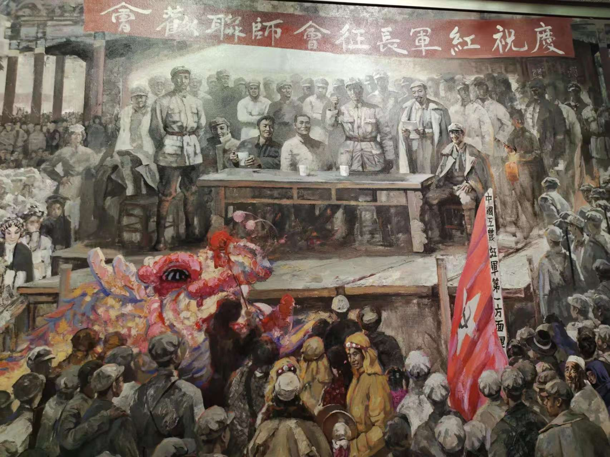
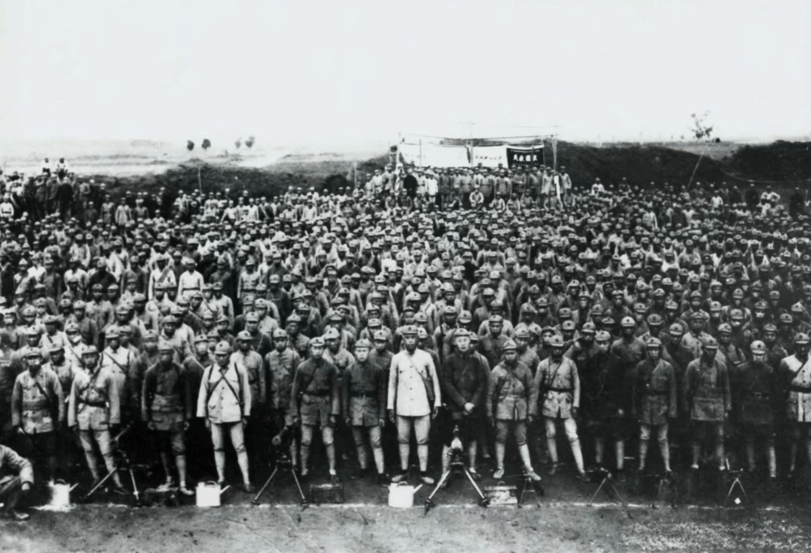
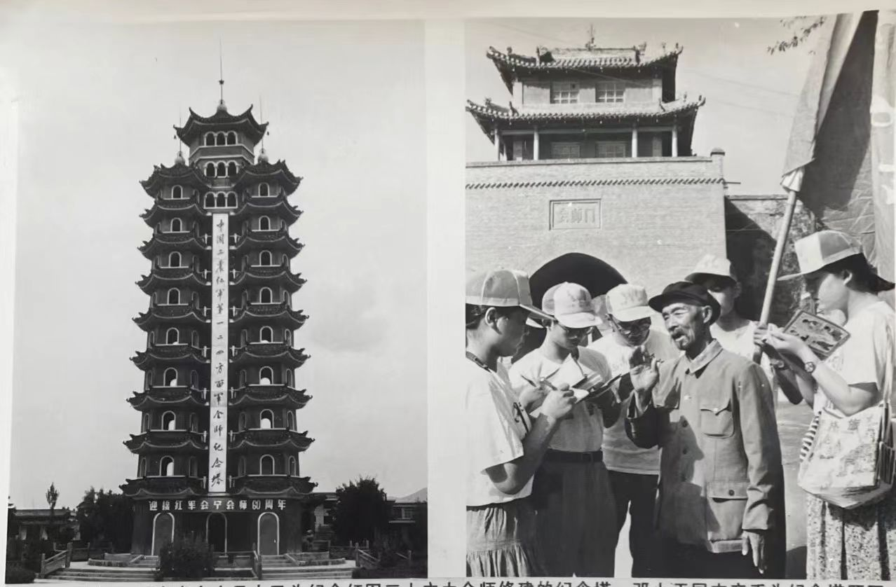

会师历史时间轴
1936.09
会师地点战略决策
周恩来提出会宁为会师地，因其北依黄河、紧靠西兰公路，是战略枢纽。毛泽东赞“会宁，好地名，红军会师，中国安宁”。

1936.10.09
红一、红四方面军会师
红四方面军总指挥部到达会宁，与红一方面军部队胜利会师，拉开红军主力西北大会师序幕。

1936.10.10

会师联欢大会
红一、红四方面军在会宁文庙大成殿召开联欢会，战士与群众共庆胜利，场面蔚为壮观。
1936.10.22
红二方面军与红一方面军会师
红二方面军在将台堡与红一方面军会师，红军三大主力全部会师，长征胜利结束。
